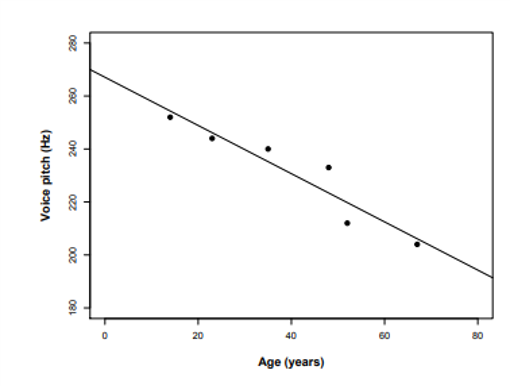
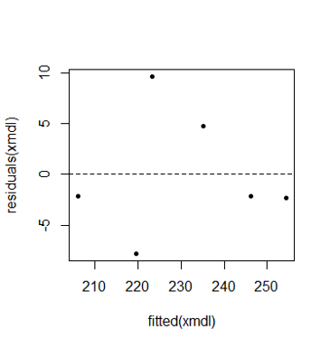
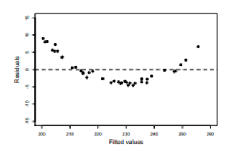
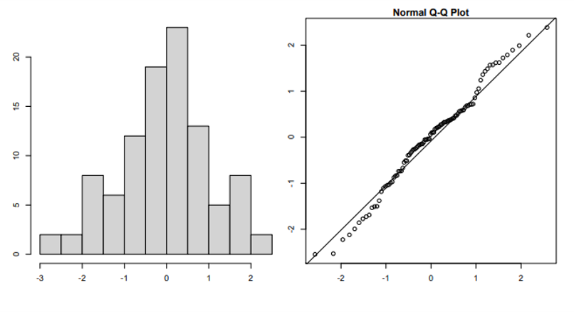
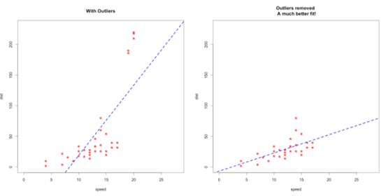
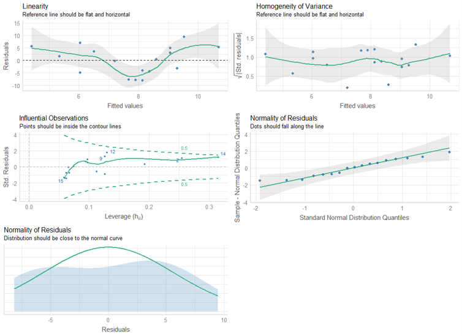

Introduction
Linear Regression II
Statistics for CSAI II
Travis J. Wiltshire, Ph.D.
Outline
- Understand linear regression with one predictor
- Categorical
- Meaningful intercepts
- Assumptions of Regression
Gvlma()check_model()from performance package
Quiz
Question 1
question("If you observed a-0.03 correlation between hours of daylight and mood, which are you most likely to include?",
answer("There is a negative relationship between hours of daylight and mood."),
answer("There is a positive relationship between hours of daylight and mood."),
answer("There is no relationship between hours of daylight and mood."),
answer("Not enough information is provided", correct = TRUE),
incorrect = "Hint: Try again, you can pick another answer!",
allow_retry = TRUE
)Results
3. If you observeda-0.03 correlation between hours of daylight and mood, which are you most likely to include?
Question 2
question("In a regression equation, b0 describes which of the following?",
answer("The x intercept"),
answer("The regression coefficient of the predictor"),
answer("The correlation coefficients"),
answer("The y intercept", correct = TRUE),
incorrect = "Hint: Try again, you can pick another answer!",
allow_retry = TRUE
)Results
2. In a regression equation, b0 describes which of the following?
Question 3
question("All regression models use a straight line to describe the data.",
answer("Yes", correct = TRUE),
answer("No", correct = TRUE),
incorrect = "Hint: Try again, you can pick another answer!",
allow_retry = TRUE
)Results
3. All regression models use a straight line to describe the data.
Question 4
question("The slope of a regression line can be:",
answer("Positive", correct = TRUE),
answer("Negative", correct = TRUE),
answer("Zero", correct = TRUE),
answer("Undefined", correct = TRUE),
incorrect = "Hint: Try again, you can pick another answer!",
allow_retry = TRUE
)Results
4. The slope of a regression line can be:
Question 5
question("The R-squared value tells you",
answer("If there is a relationship between your predictor and your outcome"),
answer("How much error is in your model"),
answer("How much of the variance your overall model accounts for", correct = TRUE),
answer("If your regression summary is valid "),
incorrect = "Hint: Try again, you can pick another answer!",
allow_retry = TRUE
)Results
5. The R-squared value tells you
Understanding regression
Describing a Straight Line
\[Y_i = b_0 +b_iX_i+\epsilon_i\]
- \(b_i\)
- Regression coefficient for the predictor
- Gradient (slope) of the regression line
- Direction/strength of relationship
- \(b_0\)
- Intercept (value of Y when X = 0)
- Point at which the regression line crosses the Y-axis (ordinate) ### Different types of correlation relationships

Output of a Simple Regression
- We have created an object called albumSales.1 that contains the
results of our analysis. We can show the object by executing:
- summary(albumSales.1)
Coefficients: Estimate Std. Error t value Pr(>|t|)
(Intercept) 1.341e+02 7.537e+00 17.799 <2e-16 adverts 9.612e-02 9.632e-03 9.979 <2e-16
- Signif. codes: 0 ‘***’ 0.001 ‘**’ 0.01 ‘*’ 0.05 ‘.’ 0.1 ‘ ’ 1 - Residual standard error: 65.99 on 198 degrees of freedom
- Multiple R-squared: 0.3346, Adjusted R-squared: 0.3313
- F-statistic: 99.59 on 1 and 198 DF, p-value: < 2.2e-16
Making predictions with our Model
\[Record\ Sales_i = b_0+b_1Advertising\ Budget_i\\ =134.14+(0.09612\times Advertising\ Budget_i)\]
\[Record\ Sales_i = 134.14+(0.09612\times Advertising\ Budget_i)\\ =134.14+(0.09612\times 100)\\ =143.75\]
Regression in Matrix Algebra Form
\[\underbrace{\begin{bmatrix} y_1 \\ y_2 \\ y_3 \\ \end{bmatrix}}_y =\underbrace{ \begin{bmatrix} 1 & x_1 \\ 2 & x_2 \\3 & x_3 \\ \end{bmatrix}}_X\underbrace{\begin{bmatrix} \beta_0 \\ \beta_1 \\ \end{bmatrix}}_\beta+\underbrace{\begin{bmatrix} e_1 \\ e_2 \\ e_3 \\ \end{bmatrix}}_e=X\beta+e\]
Note that the matrix-vector multiplication \(X\beta\) results in: \[X\beta=\begin{bmatrix} \beta_0+\beta_1 x_1 \\ \beta_0+\beta_1 x_2 \\ \beta_0+\beta_1 x_3 \\ \end{bmatrix} \]
Regression with a Categorical Predictor
pitch = c(233,204,242,130,112,142)
sex = c(rep(“female”,3),rep(“male”,3))
my.df = data.frame(sex,pitch)
#model pitch by sex xmdl = lm(pitch ~ sex, my.df)
summary(xmdl)
pitch = c(233,204,242,130,112,142)
sex = c(rep("female",3),rep("male",3))
my.df = data.frame(sex,pitch)
#model pitch by sex
xmdl = lm(pitch ~ sex, my.df)
summary(xmdl)##
## Call:
## lm(formula = pitch ~ sex, data = my.df)
##
## Residuals:
## 1 2 3 4 5 6
## 6.667 -22.333 15.667 2.000 -16.000 14.000
##
## Coefficients:
## Estimate Std. Error t value Pr(>|t|)
## (Intercept) 226.33 10.18 22.224 2.43e-05 ***
## sexmale -98.33 14.40 -6.827 0.00241 **
## ---
## Signif. codes: 0 '***' 0.001 '**' 0.01 '*' 0.05 '.' 0.1 ' ' 1
##
## Residual standard error: 17.64 on 4 degrees of freedom
## Multiple R-squared: 0.921, Adjusted R-squared: 0.9012
## F-statistic: 46.61 on 1 and 4 DF, p-value: 0.002407What’s going on with our predictor?
contrasts(my.df$sex) male female 0 male 1
mean(my.df[my.df\(sex=="female",]\)pitch) 226.3333
mean(my.df[my.df\(sex==“male",]\)pitch) 128
Call: lm(formula = pitch ~ sex, data = my.df)
Residuals: 1 2 3 4 5 6 6.667 -22.333 15.667 2.000 -16.000 14.000
Coefficients: Estimate Std. Error t value Pr(>|t|)
(Intercept) 226.33 10.18 22.224 2.43e-05 *
sexmale -98.33 14.40 -6.827 0.00241 — Signif. codes: 0
‘’ 0.001 ‘’ 0.01 ‘’ 0.05 ‘.’ 0.1 ‘ ’ 1
Residual standard error: 17.64 on 4 degrees of freedom Multiple R-squared: 0.921, Adjusted R-squared: 0.9012 F-statistic: 46.61 on 1 and 4 DF, p-value: 0.002407
Exercise 1: Run a regression on exam anxiety data
- Load the Exam Anxiety.dat file into R.
- Make a prediction about the relationship between exam anxiety and gender
- Run a linear regression using the
lm()function - Interpret the output
head(exam_data)
#make prediction and make linar regression modelmod1<-lm(Anxiety~Gender,data=examData)
summary(mod1)1. Loading Exam Anxiety data
In this online coding environment it’s not needed to load the data, because they are pre-loaded. However, do not forget to load the data and libraries when running R studio on your computer! It’s saved under variable exam_data
# Create dataframe
head(exam_data)
# Model pitch by sex
# Check how R is treating the dummy coding of a character variable
# Continous datapitch = c(233,204,242,130,112,142)
sex = as.factor(c(rep("female",3),rep("male",3)))
my.df = data.frame(sex,pitch)
# Model pitch by sex
xmdl = lm(pitch ~ sex, my.df)
summary(xmdl)
# dummy code
contrasts(my.df$sex)
mean(my.df[my.df$sex=="female",]$pitch)Meaningless intercepts with continuous variables
age = c(14,23,35,48,52,67)
pitch = c(252,244,240,233,212,204)
my.df = data.frame(age,pitch)
xmdl = lm(pitch ~ age, my.df)
summary(xmdl)
age = c(14,23,35,48,52,67)
pitch = c(252,244,240,233,212,204)
my.df = data.frame(age,pitch)
xmdl = lm(pitch ~ age, my.df)
summary(xmdl)##
## Call:
## lm(formula = pitch ~ age, data = my.df)
##
## Residuals:
## 1 2 3 4 5 6
## -2.338 -2.149 4.769 9.597 -7.763 -2.115
##
## Coefficients:
## Estimate Std. Error t value Pr(>|t|)
## (Intercept) 267.0765 6.8522 38.98 2.59e-06 ***
## age -0.9099 0.1569 -5.80 0.00439 **
## ---
## Signif. codes: 0 '***' 0.001 '**' 0.01 '*' 0.05 '.' 0.1 ' ' 1
##
## Residual standard error: 6.886 on 4 degrees of freedom
## Multiple R-squared: 0.8937, Adjusted R-squared: 0.8672
## F-statistic: 33.64 on 1 and 4 DF, p-value: 0.004395Meaningless intercepts


Using centering to make a more meaningful intercept
my.df$age.c = my.df$age - mean(my.df$age) CENTERING
xmdl = lm(pitch ~ age.c, my.df)
summary(xmdl)
age = c(14,23,35,48,52,67)
pitch = c(252,244,240,233,212,204)
my.df = data.frame(age,pitch)
my.df$age.c = my.df$age - mean(my.df$age) #CENTERING
xmdl = lm(pitch ~ age.c, my.df)
summary(xmdl)##
## Call:
## lm(formula = pitch ~ age.c, data = my.df)
##
## Residuals:
## 1 2 3 4 5 6
## -2.338 -2.149 4.769 9.597 -7.763 -2.115
##
## Coefficients:
## Estimate Std. Error t value Pr(>|t|)
## (Intercept) 230.8333 2.8113 82.11 1.32e-07 ***
## age.c -0.9099 0.1569 -5.80 0.00439 **
## ---
## Signif. codes: 0 '***' 0.001 '**' 0.01 '*' 0.05 '.' 0.1 ' ' 1
##
## Residual standard error: 6.886 on 4 degrees of freedom
## Multiple R-squared: 0.8937, Adjusted R-squared: 0.8672
## F-statistic: 33.64 on 1 and 4 DF, p-value: 0.004395
Continous data Exercise
# create new dataframe
# Check with centering
# Check linearity and homscedasticityage = c(14,23,35,48,52,67)
pitch = c(252,244,240,233,212,204)
my.df = data.frame(age,pitch)
xmdl = lm(pitch ~ age, my.df)
summary(xmdl)
my.df$age.c = my.df$age - mean(my.df$age)
xmdl = lm(pitch ~ age.c, my.df)
summary(xmdl)
plot(fitted(xmdl),residuals(xmdl), pch=20)
abline(a=0,b=0, lty=2)
#Check normality of residuals
hist(residuals(xmdl))
qqnorm(residuals(xmdl))
#Check for influential data points
dfbeta(xmdl)
# Global Check of the assumptions
require(gvlma)
gvlma(xmdl)Now our intercept tells us the mean voice pitch.
Assumptions of Regression
Linearity
- Assuming a linear combination of variables to describe our outcome
- If not, residuals plot will show curves or some other patterns
plot(fitted(xmdl),residuals(xmdl), pch=20)
abline(a=0,b=0, lty=2)


Homoscedasticity
- The variance of the data should be approximately equal across the range of predicted values
- Check the residual plots
Good / Homoscedastic

Less Good

Normality of Residuals
Examine the histogram or q-q plot of the residuals.
hist(residuals(xmdl))
qqnorm(residuals(xmdl))

Be cautious of influential points (outliers)
dfbeta(xmdl)
dfbeta(xmdl)## (Intercept) age.c
## 1 -0.8002664 0.06437573
## 2 -0.5220150 0.02736278
## 3 0.9678744 -0.01456709
## 4 2.0026352 0.05092767
## 5 -1.7103247 -0.06479736
## 6 -0.7828787 -0.06622744Leave one out diagnostics for each point
- Adjustments to the coef if that estimate is left out
Make sure the values won’t change the sign of the coef
Half of the absolute value of coef could be concerning
What to do if you have these points?
- Run analyses both ways (with and without) and report
- Consider why it might be valid to exclude them

Independence IMPORTANT!
- Each observation must be independent
- Increased chance of spurious results
- Meaningless p-values
- Part of the experimental design
- Use mixed models to resolve non-independencies
 |
| 
Exercise 2: Check the assumptions of exam anxiety data
- Load the Exam Anxiety.dat file into R.
- Make a prediction about the relationship between exam anxiety and exam performance
- Run a linear regression using the lm() function
- Check the linearity assumption
- Check the homoscedasticity assumption
- Check the normality of the residuals
- Check for influential data points
1. Load exam data
In this online coding environment it’s not needed to load the data, because they are pre-loaded. However, do not forget to load the data and libraries when running R studio on your computer!
#Load the data
head(data)
# Create a linear regression model
# Check linearity and homscedasticity
plot(fitted(mod1),residuals(mod1), pch=20)
abline(a=0,b=0, lty=2)
# Check normality of residuals
# Check for influential data points
# Check for global satisfaction of assumptionsmod1<-lm(examData$Exam~examData$Anxiety)
#linarity and homodas.
plot(fitted(mod1),residuals(mod1), pch=20)
abline(a=0,b=0, lty=2)
#Check normality of residuals
hist(residuals(mod1))
qqnorm(residuals(mod1))
# Check for influential data points
dfbeta(mod1)
# Check for global satisfaction of assumptions
gvlma(mod1)gvlma() - a global check of regression assumptions
gvlma(xmdl)
library(gvlma)
gvlma(xmdl)##
## Call:
## lm(formula = pitch ~ age.c, data = my.df)
##
## Coefficients:
## (Intercept) age.c
## 230.8333 -0.9099
##
##
## ASSESSMENT OF THE LINEAR MODEL ASSUMPTIONS
## USING THE GLOBAL TEST ON 4 DEGREES-OF-FREEDOM:
## Level of Significance = 0.05
##
## Call:
## gvlma(x = xmdl)
##
## Value p-value Decision
## Global Stat 1.9167 0.7511 Assumptions acceptable.
## Skewness 0.2132 0.6443 Assumptions acceptable.
## Kurtosis 0.1942 0.6595 Assumptions acceptable.
## Link Function 1.1268 0.2885 Assumptions acceptable.
## Heteroscedasticity 0.3825 0.5363 Assumptions acceptable.Combine both methods !
Original paper here
Link Function
- Is your dependent variable truly continuous, or is it maybe more
categorical?
- Model could be mis-specified
- Rejection of the null (p < .05) or failure of this assumption indicates that you should considering use an alternative form of the generalized linear model (e.g., logistic or binomial regression).
Exercise: Check the assumptions of exam anxiety data with gvlma()
- Try
gvlma()on the exam anxiety model- Don’t forget to install and load the gvlma package
- Use
check_model()from performance package on model - Compare it with the conclusions you made from checking the graphs
Running another model and checking the assumptions
- Use the driving data with
read.csv() - Run two models
- Age as predictor of errors at time2
- Gender as a predictor of errors at time2
- Interpret the output
- For age, generate a meaningful intercept
- Check the assumptions of both models
- Write a summary of the results
1. Running another model
In this online coding environment it’s not needed to load the data, because they are pre-loaded. However, do not forget to load the data and libraries when running R studio on your computer!
#Load the data
head(driving)
# create new models
# Create a centered age variable and re-run the model
# Do a global check of all the models
# Use performance from easy stats#driving <- read.csv("driving.csv")
dmod1<- lm(errors_time2~age,data=driving)
dmod2<- lm(errors_time2~gender,data=driving)
# Create a centered age variable and re-run the model
driving$age.c<- driving$age-mean(driving$age)
dmod1c<-lm(errors_time2~age.c,data=driving)
summary(dmod1c)
# Do a global check of all the models
gvlma(dmod1)
gvlma(dmod2)
gvlma(dmod1c)
# Use performance from easy stats
check_model(dmod1)check_model() from performance package

Conclusion
Summing Up
- Understand linear regression with one predictor
- Categorical
- Meaningful intercepts
- Assumptions of Regression
- gvlma
check_model()from performance package
Thanks!
See you next week! Questions?